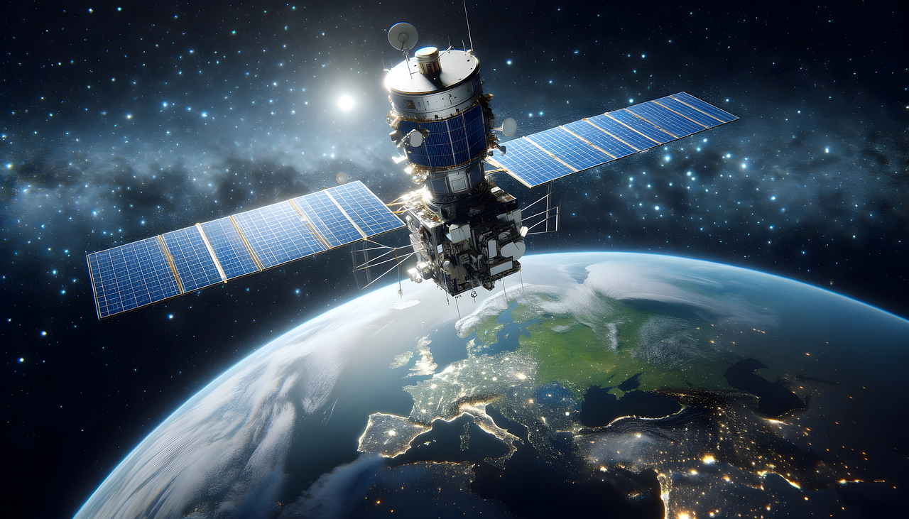

Satellites play an important role in the exploration and utilisation of space. They are used to observe our planet, explore other planets and objects in space, monitor climate and weather patterns, communicate with spacecraft, and provide navigation assistance, to name a few. Researchers and scientists can better understand what is going on in our atmosphere and beyond thanks to satellites. They are able to map out new routes, measure temperatures, track the motion of stars and galaxies, and identify changes in the land. Satellites are also employed to track military assets and to let spacefaring nations communicate with one another.
Space geeks have built an array of different types of satellites for different purposes, such as communications satellites for global voice, data and video transmissions, Earth observation satellites for measuring the environment, navigation satellites for providing global positioning services, and science satellites for collecting scientific data. Satellites orientate around different orbits. Therefore, they can be grouped based on the orbits at which they find themselves. However, to know the various different types of satellites. It is usually done by identifying the mission- specific properties of the satellite that is, the function of the satellite build based on it's payload added to the satellite platform. To know more about the satellite orbits click here
 A study done in 2021 by Pradeep Rawat says that, There are nearly 6,542 satellites orbiting the Earth as of January 1, 2021. Out of which 3,372 satellites are active, and 3,170 satellites are inactive. As reported in the Index of Objects Launched into Outer Space, issued by the United Nations Office for Outer Space Affairs (UNOOSA), there were 7,389 individual satellites in Space at the end of April 2021.
Next Page